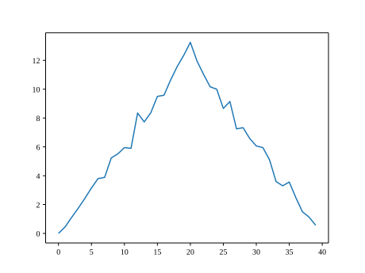
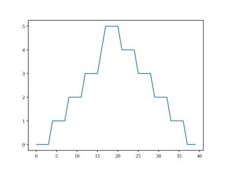
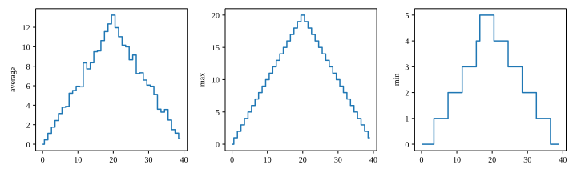

Content from Python Fundamentals
Last updated on 2026-03-25 | Edit this page
Estimated time: 60 minutes
Overview
Questions
- How do we process mathematical operations in Python
Objectives
- Become familiar with mathematical operators and in-built functions.
- Become confident using the console to run mathematical operations.
- Understand the order of operations.
Simple calculation
Any Python interpreter can be used as a calculator:
OUTPUT
23Modulus
OUTPUT
1Note: anything following a ‘#’ is considered a comment. Comments are not read by Python they are just used to inform users.
Order of operations
Question: Before you enter the next calculation, take a second and consider what answer would you be expecting?
OUTPUT
9If the answer was not what you were expecting you will need to become clear on order of operations in Python.
Remember PE(DM)(AS)
Parentheses
Exponentiation
Division/Multiplication*
Addition/Subtraction*
Operators with same precedent are calculated left to right.
This tells you what order mathematical operations will be performed and ensures consistency during evaluation.
To make this concept clearer, try:
OUTPUT
5Using brackets we have manipulated the order of operations to perform the addition before the division. Be conscious of how you structure your mathematical operations to ensure the desired results but also readability of your code.
Getting Help
Use the built-in function help to get help for a
function. Every built-in function has extensive documentation that
can also be found online.
OUTPUT
Help on built-in function print in module builtins:
print(*args, sep=' ', end='\n', file=None, flush=False)
Prints the values to a stream, or to sys.stdout by default.
sep
string inserted between values, default a space.
end
string appended after the last value, default a newline.
file
a file-like object (stream); defaults to the current sys.stdout.
flush
whether to forcibly flush the stream.If you skip around and run cells randomly, you may not even know whether x is 10 or 25. That is where notebooks get chaotic fast.
Problems caused by running out of order
- Name errors: variables or functions are missing
- Old values: variables keep outdated data from earlier runs
- Confusing bugs: results change for no obvious reason
- Poor reproducibility: others cannot get the same output
- Hidden dependencies: a cell works only because of some earlier unseen action
Best practice
A good notebook should be able to run from top to bottom without errors. That is the gold standard.
This help message (the function’s “docstring”) includes a usage statement, a list of parameters accepted by the function, and their default values if they have them.
It is normal to encounter error messages while programming, whether you are learning for the first time or have been programming for many years. We will discuss error messages in more detail later. For now, let’s explore how people use them to get more help when they are stuck with their Python code.
- Search the internet: paste the last line of your error message or
the word “python” and a short description of what you want to do into
your favourite search engine and you will usually find several examples
where other people have encountered the same problem and came looking
for help.
- StackOverflow can be particularly helpful for this: answers to questions are presented as a ranked thread ordered according to how useful other users found them to be.
- Take care: copying and pasting code written by somebody else is risky unless you understand exactly what it is doing!
- Ask somebody “in the real world”. If you have a colleague or friend with more expertise in Python than you have, show them the problem you are having and ask them for help.
We will discuss more debugging strategies in greater depth later in the lesson.
- Built-in functions are always available to use.
- Use
help(thing)to view help for something. - Error messages provide information about what has gone wrong with your program and where.
Content from Variables and basic data types
Last updated on 2026-03-26 | Edit this page
Estimated time: 10 minutes
Overview
Questions
- How do we process mathematical operations in Spyder?
Objectives
- Become familiar with mathematical operators and in-built functions.
- Become confident using the console to run mathematical operations.
- Understand the order of operations.
Variables
To do anything useful with data, we need to assign its value to a
variable. In Python, we can assign a value to a variable, using the equals sign
=. For example, we can track the weight of a patient who
weighs 60 kilograms by assigning the value 60 to a variable
weight_kg:
From now on, whenever we use weight_kg, Python will
substitute the value we assigned to it. In layperson’s terms, a
variable is a name for a value.
In Python, variable names can be:
Variable names are cases sensitive (My_name is different to my_name).
They must start with a letter or a underscore.
They can consist of letters, numbers, periods, and underscores.
There are reserved words (e.g., ‘else’, ‘for’) that cannot be used for naming variables as they are already used by Python for specific purposes.
This means that, for example:
-
weight0is a valid variable name, whereas0weightis not -
weightandWeightare different variables
It may seem fussy but there are actually not that many enforced restrictions compared to the number of variable naming combinations. However, just because you can, doesn’t mean you should. There exist several naming conventions in the Python community to help provide structure and guidance to variable naming.
my_variable (underscore or snake case)
myVariable (camel case)
Although some may disagree with us, we believe for most users it does not matter which convention you pick. There are two key principles for variable naming, that we recommend, that should make your life easier:
Consistency – pick a convention and stick with it.
Succinctness - Keep variable names short, readable, and descriptive.
For example, if you wanted a variable name for a temperature reading taken in Aberystwyth:
This:
min_temp_aber_C
Is better than this:
temp
Or this:
themininimumtemperaturerecordedfromaberystwythindegreescelcius
Being consistent, aware of context, and conscious of your variable naming will make reading your code easier and decrease the risk of errors.
Types of data
Data types
Python utilises different data types to efficiently store and manipulate different kinds of data. Python is dynamical typed; this means that you do not need to specify a data type when you declare a variable. You can give the variable name and the data you want to store and let Python worry about how it deals with that. We will look at the most common data types in Python.
| Data Type | Description | Example |
|---|---|---|
| int | Integer data type | 42 |
| float | Floating-point data type | 3.14 |
| str | String data type | ‘hello’ |
| bool | Boolean data type | True, False |
| NoneType | NoneType data type (represents null value) | None |
In the example above, variable weight_kg has an integer
value of 60. If we want to more precisely track the weight
of our patient, we can use a floating point value by executing:
To create a string, we add single or double quotes around some text. To identify and track a patient throughout our study, we can assign each person a unique identifier by storing it in a string:
##How Python Assigns Data Types
Dynamic Typing
In Python, you don’t declare a variable’s type explicitly. Instead, the type is determined automatically when you assign a value.
As for example depending on how you have assign the value, python automatic assumes the type it is:
The issue with this is that some data types can be combined—for example, adding an integer to a float works as expected. However, this is not always the case. Strings cannot be combined with integers or floats, as this would be like trying to add a sentence to a number, which doesn’t make sense.
Another problem is that with dynamic typing, there are situations where values that should be numbers (such as integers or floats) are instead stored as strings. This can lead to unexpected behaviour, as shown below:
To be able to use this value as a number (int/float), then we need to change its type (from string -> int):
Using Variables in Python
Once we have data stored with variable names, we can make use of it in calculations. We may want to store our patient’s weight in pounds as well as kilograms:
We might decide to add a prefix to our patient identifier:
Built-in Python functions
To carry out common tasks with data and variables in Python, the
language provides us with several built-in functions. To display information to
the screen, we use the print function:
OUTPUT
132.66
inflam_001When we want to make use of a function, referred to as calling the
function, we follow its name by parentheses. The parentheses are
important: if you leave them off, the function doesn’t actually run!
Sometimes you will include values or variables inside the parentheses
for the function to use. In the case of print, we use the
parentheses to tell the function what value we want to display. We will
learn more about how functions work and how to create our own in later
episodes.
We can display multiple things at once using only one
print call:
OUTPUT
inflam_001 weight in kilograms: 60.3We can also call a function inside of another function call. For example,
Python has a built-in function called type that tells you a
value’s data type:
OUTPUT
<class 'float'>
<class 'str'>Moreover, we can do arithmetic with variables right inside the
print function:
OUTPUT
weight in pounds: 132.66The above command, however, did not change the value of
weight_kg:
OUTPUT
60.3To change the value of the weight_kg variable, we have
to assign weight_kg a new value using the
equals = sign:
OUTPUT
weight in kilograms is now: 65.0OUTPUT
`mass` holds a value of 47.5, `age` does not exist
`mass` still holds a value of 47.5, `age` holds a value of 122
`mass` now has a value of 95.0, `age`'s value is still 122
`mass` still has a value of 95.0, `age` now holds 102OUTPUT
Hopper GraceRunning code in order
Jupyter notebooks keep variables, imports, and results in memory as you run cells. That means each cell can depend on work done earlier. When cells are run out of order, the notebook can end up in a weird state where the code looks fine but behaves unpredictably.
Running cells in order makes the notebook:
- easier to understand
- easier to debug
- easier for other people to reproduce
- less likely to break because of hidden state
- Simple explanation
A notebook is not just a document. It is also a live session. If you run cell 8 before cell 3, cell 8 might still work only because something was defined earlier in a previous run. But another person opening the notebook fresh will get an error.
Examples
If Cell 2 is run before Cell 1, Python will raise an error because x does not exist yet.
Now imagine this:
If you skip around and run cells randomly, you may not even know whether x is 10 or 25. That is where notebooks get chaotic fast.
Problems caused by running out of order
- Name errors: variables or functions are missing
- Old values: variables keep outdated data from earlier runs
- Confusing bugs: results change for no obvious reason
- Poor reproducibility: others cannot get the same output
- Hidden dependencies: a cell works only because of some earlier unseen action
Best practice
A good notebook should be able to run from top to bottom without errors. That is the gold standard.
- Basic data types in Python include integers, strings, and floating-point numbers.
- Use
variable = valueto assign a value to a variable in order to record it in memory. - Variables are created on demand whenever a value is assigned to them.
- Use
print(something)to display the value ofsomething. - Use
# some kind of explanationto add comments to programs. - Built-in functions are always available to use.
- Use
help(thing)to view help for something. - Error messages provide information about what has gone wrong with your program and where.
Content from Lists and dictionaries
Last updated on 2026-03-26 | Edit this page
Estimated time: 45 minutes
Overview
Questions
- How can I store many values together?
Objectives
- Explain what a list is.
- Create and index lists of simple values.
- Change the values of individual elements
- Append values to an existing list
- Reorder and slice list elements
- Create and manipulate nested lists
In the previous episode, we analysed a single file of clinical trial inflammation data. However, after finding some peculiar and potentially suspicious trends in the trial data we ask Dr. Maverick if they have performed any other clinical trials. Surprisingly, they say that they have and provide us with 11 more CSV files for a further 11 clinical trials they have undertaken since the initial trial.
Our goal now is to process all the inflammation data we have, which means that we still have eleven more files to go!
The natural first step is to collect the names of all the files that we have to process. In Python, a list is a way to store multiple values together. In this episode, we will learn how to store multiple values in a list as well as how to work with lists.
Python lists
We create a list by putting values inside square brackets and separating the values with commas:
OUTPUT
odds are: [1, 3, 5, 7]We can access elements of a list using indices – numbered positions of elements in the list. These positions are numbered starting at 0, so the first element has an index of 0.
PYTHON
print('first element:', odds[0])
print('last element:', odds[3])
print('"-1" element:', odds[-1])OUTPUT
first element: 1
last element: 7
"-1" element: 7Yes, we can use negative numbers as indices in Python. When we do so,
the index -1 gives us the last element in the list,
-2 the second to last, and so on. Because of this,
odds[3] and odds[-1] point to the same element
here.
There is one important difference between lists and strings: we can change the values in a list, but we cannot change individual characters in a string. For example:
PYTHON
names = ['Curie', 'Darwing', 'Turing'] # typo in Darwin's name
print('names is originally:', names)
names[1] = 'Darwin' # correct the name
print('final value of names:', names)OUTPUT
names is originally: ['Curie', 'Darwing', 'Turing']
final value of names: ['Curie', 'Darwin', 'Turing']Ch-Ch-Ch-Ch-Changes
Mutable data (like lists and arrays) can be changed after creation, while immutable data (like strings and numbers) cannot be modified—only replaced. Modifying mutable objects in place can lead to unexpected behaviour if multiple variables reference the same data. To avoid this, you can create a copy so changes do not affect the original. In-place changes are more efficient but can make code harder to understand, so there is a trade-off between clarity and performance.
PYTHON
mild_salsa = ['peppers', 'onions', 'cilantro']
hot_salsa = mild_salsa # <-- mild_salsa and hot_salsa point to the *same* list data in memory
hot_salsa[0] = 'hot peppers'
print('Ingredients in mild salsa:', mild_salsa)
print('Ingredients in hot salsa:', hot_salsa)OUTPUT
Ingredients in mild salsa: ['hot peppers', 'onions', 'cilantro']
Ingredients in hot salsa: ['hot peppers', 'onions', 'cilantro']If you want variables with mutable values to be independent, you must make a copy of the value when you assign it.
PYTHON
mild_salsa = ['peppers', 'onions', 'cilantro']
hot_salsa = mild_salsa.copy() # <-- mild_salsa and hot_salsa point to the *same* list data in memory
hot_salsa[0] = 'hot peppers'
print('Ingredients in mild salsa:', mild_salsa)
print('Ingredients in hot salsa:', hot_salsa)OUTPUT
Ingredients in mild salsa: ['peppers', 'onions', 'cilantro']
Ingredients in hot salsa: ['hot peppers','onions', 'cilantro']Nested Lists
Since a list can contain any Python variables, it can even contain other lists.
For example, you could represent the products on the shelves of a
small grocery shop as a nested list called veg:

To store the contents of the shelf in a nested list, you write it this way:
PYTHON
veg = [['lettuce', 'lettuce', 'peppers', 'zucchini'],
['lettuce', 'lettuce', 'peppers', 'zucchini'],
['lettuce', 'cilantro', 'peppers', 'zucchini']]Here are some visual examples of how indexing a list of lists
veg works. First, you can reference each row on the shelf
as a separate list. For example, veg[2] represents the
bottom row, which is a list of the baskets in that row.
![veg is now shown as a list of three rows, with veg[0] representing the top row of three baskets, veg[1] representing the second row, and veg[2] representing the bottom row.](../fig/04_groceries_veg0.png)
Index operations using the image would work like this:
OUTPUT
['lettuce', 'cilantro', 'peppers', 'zucchini']OUTPUT
['lettuce', 'lettuce', 'peppers', 'zucchini']To reference a specific basket on a specific shelf, you use two
indexes. The first index represents the row (from top to bottom) and the
second index represents the specific basket (from left to right). ![veg is now shown as a two-dimensional grid, with each basket labeled according to its index in the nested list. The first index is the row number and the second index is the basket number, so veg[1][3] represents the basket on the far right side of the second row (basket 4 on row 2): zucchini](../fig/04_groceries_veg00.png)
OUTPUT
'lettuce'OUTPUT
'peppers'There are many ways to change the contents of lists besides assigning new values to individual elements:
List slicing
Slicing From the End
Use slicing to access only the last four characters of a string or entries of a list.
PYTHON
string_for_slicing = 'Observation date: 02-Feb-2013'
list_for_slicing = [['fluorine', 'F'],
['chlorine', 'Cl'],
['bromine', 'Br'],
['iodine', 'I'],
['astatine', 'At']]OUTPUT
'2013'
[['chlorine', 'Cl'], ['bromine', 'Br'], ['iodine', 'I'], ['astatine', 'At']]Would your solution work regardless of whether you knew beforehand the length of the string or list (e.g. if you wanted to apply the solution to a set of lists of different lengths)? If not, try to change your approach to make it more robust.
Hint: Remember that indices can be negative as well as positive
Non-Continuous Slices
So far we’ve seen how to use slicing to take single blocks of successive entries from a sequence. But what if we want to take a subset of entries that aren’t next to each other in the sequence?
You can achieve this by providing a third argument to the range within the brackets, called the step size. The example below shows how you can take every third entry in a list:
PYTHON
primes = [2, 3, 5, 7, 11, 13, 17, 19, 23, 29, 31, 37]
subset = primes[0:12:3]
print('subset', subset)OUTPUT
subset [2, 7, 17, 29]Notice that the slice taken begins with the first entry in the range, followed by entries taken at equally-spaced intervals (the steps) thereafter. If you wanted to begin the subset with the third entry, you would need to specify that as the starting point of the sliced range:
PYTHON
primes = [2, 3, 5, 7, 11, 13, 17, 19, 23, 29, 31, 37]
subset = primes[2:12:3]
print('subset', subset)OUTPUT
subset [5, 13, 23, 37]Use the step size argument to create a new string that contains only every other character in the string “In an octopus’s garden in the shade”. Start with creating a variable to hold the string:
What slice of beatles will produce the following output
(i.e., the first character, third character, and every other character
through the end of the string)?
OUTPUT
I notpssgre ntesaeIf you want to take a slice from the beginning of a sequence, you can omit the first index in the range:
PYTHON
date = 'Monday 4 January 2016'
day = date[0:6]
print('Using 0 to begin range:', day)
day = date[:6]
print('Omitting beginning index:', day)OUTPUT
Using 0 to begin range: Monday
Omitting beginning index: MondayAnd similarly, you can omit the ending index in the range to take a slice to the very end of the sequence:
PYTHON
months = ['jan', 'feb', 'mar', 'apr', 'may', 'jun', 'jul', 'aug', 'sep', 'oct', 'nov', 'dec']
sond = months[8:12]
print('With known last position:', sond)
sond = months[8:len(months)]
print('Using len() to get last entry:', sond)
sond = months[8:]
print('Omitting ending index:', sond)OUTPUT
With known last position: ['sep', 'oct', 'nov', 'dec']
Using len() to get last entry: ['sep', 'oct', 'nov', 'dec']
Omitting ending index: ['sep', 'oct', 'nov', 'dec']Overloading
+ usually means addition, but when used on strings or
lists, it means “concatenate”. Given that, what do you think the
multiplication operator * does on lists? In particular,
what will be the output of the following code?
[2, 4, 6, 8, 10, 2, 4, 6, 8, 10][4, 8, 12, 16, 20][[2, 4, 6, 8, 10], [2, 4, 6, 8, 10]][2, 4, 6, 8, 10, 4, 8, 12, 16, 20]
The technical term for this is operator overloading: a
single operator, like + or *, can do different
things depending on what it’s applied to.
Dictionaries
- Dictionaries are unordered collections of key-value pairs.
- They are mutable and can contain keys of any immutable data type.
- Dictionaries are created using curly braces {}.
Example of dictionary creation:
Accessing elements:
- Elements in a dictionary are accessed using square brackets [] and keys.
Example of accessing elements:
Manipulating dictionaries:
- Dictionaries support various operations like adding, removing, and updating key-value pairs.
Examples of manipulation:
PYTHON
my_dict['gender'] = 'Male' # Adds 'gender': 'Male' to the dictionary
del my_dict['age'] # Removes the key 'age' and its value
my_dict['city'] = 'Los Angeles' # Updates the value of 'city' key to 'Los Angeles'-
[value1, value2, value3, ...]creates a list. - Lists can contain any Python object, including lists (i.e., list of lists).
- Lists are indexed and sliced with square brackets (e.g.,
list[0]andlist[2:9]), in the same way as strings and arrays. - Lists are mutable (i.e., their values can be changed in place).
- Strings are immutable (i.e., the characters in them cannot be changed).
Content from Libraries and imports
Last updated on 2026-03-24 | Edit this page
Estimated time: 50 minutes
Overview
Questions
- How can I visualize tabular data in Python?
- How can I group several plots together?
Objectives
- Plot simple graphs from data.
- Plot multiple graphs in a single figure.
What is a library?
A library is a collection of ready-made code written by other programmers that you can use in your own program.
Instead of building every tool yourself, you can borrow tools that already exist. A library might contain code for:
- doing calculations
- working with data
- drawing graphs
- making games
- handling dates and times
You can think of a library like a toolbox. If you need a hammer, you do not make one from metal and wood first — you take one from the toolbox and use it. In programming, a library is that toolbox.
Why do programmers use libraries?
Programmers use libraries because they save time and effort.
If somebody has already written code that works well, it makes sense to use it rather than create the same thing again. Libraries help us:
- work faster
- avoid repeating work
- use tested and reliable code
- solve bigger problems more easily
This is one reason programming is powerful: we build on work that already exists.
Why do we not write everything from scratch?
Writing everything from scratch would take far too long and would often lead to more mistakes.
Imagine you wanted to create a graph, analyse a large dataset, or generate random numbers. You could try to write all that code yourself, but it would be slow, difficult, and unnecessary.
Instead, we use libraries because:
- they are already written
- they are usually tested by many people
- they let us focus on solving the actual problem
- they make programs shorter and clearer
So rather than spending hours rebuilding common tools, we use libraries and spend our time on the parts that are unique to our project.
What does import mean?
To use a library in Python, we usually import it.
The word import tells Python to load the library so we can use its tools in our code.
For example:
This imports the math library, which contains useful mathematical functions.
After that, we can use parts of the library like this:
This prints the square root of 16.
What does import … as … mean?
Sometimes library names are long, or programmers want a shorter name to type. Python lets us rename a library when we import it.
For example:
This imports the library numpy but gives it the shorter name np inside our code.
Now instead of writing:
we write:
This is quicker and easier to read once you know the shortcut.
Why use import … as …?
We use import … as … because:
- it saves typing
- it makes code neater
- short names are often standard and widely recognised
For example:
- numpy as np
- pandas as pd
- matplotlib.pyplot as plt
These short versions are commonly used by programmers, so using them makes your code look familiar and professional.
Example
PYTHON
import math
import numpy as np
print(math.pi)
numbers = np.array([1, 2, 3, 4])
print(numbers)In this example:
math is imported with its full name numpy is imported with the shorter name np Key idea
Libraries give us access to code that other people have already written. We import libraries so we can use their tools. We sometimes rename them with as to make our code shorter and easier to work with.
- Use the
pyplotmodule from thematplotliblibrary for creating simple visualizations.
Content from Analyzing Patient Data using numpy and pandas
Last updated on 2026-03-26 | Edit this page
Estimated time: 60 minutes
Overview
Questions
- How can I process tabular data files in Python?
Objectives
- Explain what a library is and what libraries are used for.
- Import a Python library and use the functions it contains.
- Read tabular data from a file into a program.
- Select individual values and subsections from data.
- Perform operations on arrays of data.
Words are useful, but what’s more useful are the sentences and stories we build with them. Similarly, while a lot of powerful, general tools are built into Python, specialised tools built up from these basic units live in libraries that can be called upon when needed.
Loading data into Python
To begin processing the clinical trial inflammation data, we need to load it into Python. We can do that using a library called NumPy, which stands for Numerical Python. In general, you should use this library when you want to do fancy things with lots of numbers, especially if you have matrices or arrays. To tell Python that we’d like to start using NumPy, we need to import it:
Importing a library is like getting a piece of lab equipment out of a storage locker and setting it up on the bench. Libraries provide additional functionality to the basic Python package, much like a new piece of equipment adds functionality to a lab space. Just like in the lab, importing too many libraries can sometimes complicate and slow down your programs - so we only import what we need for each program.
Once we’ve imported the library, we can ask the library to read our data file for us:
OUTPUT
array([[ 0., 0., 1., ..., 3., 0., 0.],
[ 0., 1., 2., ..., 1., 0., 1.],
[ 0., 1., 1., ..., 2., 1., 1.],
...,
[ 0., 1., 1., ..., 1., 1., 1.],
[ 0., 0., 0., ..., 0., 2., 0.],
[ 0., 0., 1., ..., 1., 1., 0.]])The expression numpy.loadtxt(...) is a function call that asks Python
to run the function
loadtxt which belongs to the numpy library.
The dot notation in Python is used most of all as an object
attribute/property specifier or for invoking its method.
object.property will give you the object.property value,
object_name.method() will invoke on object_name method.
As an example, John Smith is the John that belongs to the Smith
family. We could use the dot notation to write his name
smith.john, just as loadtxt is a function that
belongs to the numpy library.
numpy.loadtxt has two parameters: the name of the file we
want to read and the delimiter
that separates values on a line. These both need to be character strings
(or strings for short), so we put
them in quotes.
Since we haven’t told it to do anything else with the function’s
output, the notebook displays it.
In this case, that output is the data we just loaded. By default, only a
few rows and columns are shown (with ... to omit elements
when displaying big arrays). Note that, to save space when displaying
NumPy arrays, Python does not show us trailing zeros, so
1.0 becomes 1..
Our call to numpy.loadtxt read our file but didn’t save
the data in memory. To do that, we need to assign the array to a
variable. In a similar manner to how we assign a single value to a
variable, we can also assign an array of values to a variable using the
same syntax. Let’s re-run numpy.loadtxt and save the
returned data:
This statement doesn’t produce any output because we’ve assigned the
output to the variable data. If we want to check that the
data have been loaded, we can print the variable’s value:
OUTPUT
[[ 0. 0. 1. ..., 3. 0. 0.]
[ 0. 1. 2. ..., 1. 0. 1.]
[ 0. 1. 1. ..., 2. 1. 1.]
...,
[ 0. 1. 1. ..., 1. 1. 1.]
[ 0. 0. 0. ..., 0. 2. 0.]
[ 0. 0. 1. ..., 1. 1. 0.]]With the following command, we can see the array’s shape:
OUTPUT
(60, 40)The output tells us that the data array variable
contains 60 rows and 40 columns. When we created the variable
data to store our arthritis data, we did not only create
the array; we also created information about the array, called members or attributes. This extra
information describes data in the same way an adjective
describes a noun. data.shape is an attribute of
data which describes the dimensions of data.
We use the same dotted notation for the attributes of variables that we
use for the functions in libraries because they have the same
part-and-whole relationship.
If we want to get a single number from the array, we must provide an index in square brackets after the variable name, just as we do in math when referring to an element of a matrix. Our inflammation data has two dimensions, so we will need to use two indices to refer to one specific value:
OUTPUT
first value in data: 0.0OUTPUT
middle value in data: 16.0The expression data[29, 19] accesses the element at row
30, column 20. While this expression may not surprise you,
data[0, 0] might. Programming languages like Fortran,
MATLAB and R start counting at 1 because that’s what human beings have
done for thousands of years. Languages in the C family (including C++,
Java, Perl, and Python) count from 0 because it represents an offset
from the first value in the array (the second value is offset by one
index from the first value). This is closer to the way that computers
represent arrays (if you are interested in the historical reasons behind
counting indices from zero, you can read Mike
Hoye’s blog post). As a result, if we have an M×N array in Python,
its indices go from 0 to M-1 on the first axis and 0 to N-1 on the
second. It takes a bit of getting used to, but one way to remember the
rule is that the index is how many steps we have to take from the start
to get the item we want.
!['data' is a 3 by 3 numpy array containing row 0: ['A', 'B', 'C'], row 1: ['D', 'E', 'F'], androw 2: ['G', 'H', 'I']. Starting in the upper left hand corner, data[0, 0] = 'A', data[0, 1] = 'B',data[0, 2] = 'C', data[1, 0] = 'D', data[1, 1] = 'E', data[1, 2] = 'F', data[2, 0] = 'G',data[2, 1] = 'H', and data[2, 2] = 'I', in the bottom right hand corner.](../fig/python-zero-index.svg)
Slicing data
An index like [30, 20] selects a single element of an
array, but we can select whole sections as well. For example, we can
select the first ten days (columns) of values for the first four
patients (rows) like this:
OUTPUT
[[ 0. 0. 1. 3. 1. 2. 4. 7. 8. 3.]
[ 0. 1. 2. 1. 2. 1. 3. 2. 2. 6.]
[ 0. 1. 1. 3. 3. 2. 6. 2. 5. 9.]
[ 0. 0. 2. 0. 4. 2. 2. 1. 6. 7.]]The slice 0:4 means,
“Start at index 0 and go up to, but not including, index 4”. Again, the
up-to-but-not-including takes a bit of getting used to, but the rule is
that the difference between the upper and lower bounds is the number of
values in the slice.
We don’t have to start slices at 0:
OUTPUT
[[ 0. 0. 1. 2. 2. 4. 2. 1. 6. 4.]
[ 0. 0. 2. 2. 4. 2. 2. 5. 5. 8.]
[ 0. 0. 1. 2. 3. 1. 2. 3. 5. 3.]
[ 0. 0. 0. 3. 1. 5. 6. 5. 5. 8.]
[ 0. 1. 1. 2. 1. 3. 5. 3. 5. 8.]]We also don’t have to include the upper and lower bound on the slice. If we don’t include the lower bound, Python uses 0 by default; if we don’t include the upper, the slice runs to the end of the axis, and if we don’t include either (i.e., if we use ‘:’ on its own), the slice includes everything:
The above example selects rows 0 through 2 and columns 36 through to the end of the array.
OUTPUT
small is:
[[ 2. 3. 0. 0.]
[ 1. 1. 0. 1.]
[ 2. 2. 1. 1.]]Analyzing data
NumPy has several useful functions that take an array as input to
perform operations on its values. If we want to find the average
inflammation for all patients on all days, for example, we can ask NumPy
to compute data’s mean value:
OUTPUT
6.14875mean is a function
that takes an array as an argument.
Let’s use three other NumPy functions to get some descriptive values about the dataset. We’ll also use multiple assignment, a convenient Python feature that will enable us to do this all in one line.
PYTHON
maxval, minval, stdval = numpy.amax(data), numpy.amin(data), numpy.std(data)
print('maximum inflammation:', maxval)
print('minimum inflammation:', minval)
print('standard deviation:', stdval)Here we’ve assigned the return value from
numpy.amax(data) to the variable maxval, the
value from numpy.amin(data) to minval, and so
on.
OUTPUT
maximum inflammation: 20.0
minimum inflammation: 0.0
standard deviation: 4.61383319712When analyzing data, though, we often want to look at variations in statistical values, such as the maximum inflammation per patient or the average inflammation per day. One way to do this is to create a new temporary array of the data we want, then ask it to do the calculation:
PYTHON
patient_0 = data[0, :] # 0 on the first axis (rows), everything on the second (columns)
print('maximum inflammation for patient 0:', numpy.amax(patient_0))OUTPUT
maximum inflammation for patient 0: 18.0We don’t actually need to store the row in a variable of its own. Instead, we can combine the selection and the function call:
OUTPUT
maximum inflammation for patient 2: 19.0What if we need the maximum inflammation for each patient over all days (as in the next diagram on the left) or the average for each day (as in the diagram on the right)? As the diagram below shows, we want to perform the operation across an axis:

To find the maximum inflammation reported for each
patient, you would apply the max function moving
across the columns (axis 1). To find the daily average
inflammation reported across patients, you would apply the
mean function moving down the rows (axis 0).
To support this functionality, most array functions allow us to specify the axis we want to work on. If we ask for the max across axis 1 (columns in our 2D example), we get:
OUTPUT
[18. 18. 19. 17. 17. 18. 17. 20. 17. 18. 18. 18. 17. 16. 17. 18. 19. 19.
17. 19. 19. 16. 17. 15. 17. 17. 18. 17. 20. 17. 16. 19. 15. 15. 19. 17.
16. 17. 19. 16. 18. 19. 16. 19. 18. 16. 19. 15. 16. 18. 14. 20. 17. 15.
17. 16. 17. 19. 18. 18.]As a quick check, we can ask this array what its shape is. We expect 60 patient maximums:
OUTPUT
(60,)The expression (60,) tells us we have an N×1 vector, so
this is the maximum inflammation per day for each patients.
If we ask for the average across/down axis 0 (rows in our 2D example), we get:
OUTPUT
[ 0. 0.45 1.11666667 1.75 2.43333333 3.15
3.8 3.88333333 5.23333333 5.51666667 5.95 5.9
8.35 7.73333333 8.36666667 9.5 9.58333333 10.63333333
11.56666667 12.35 13.25 11.96666667 11.03333333 10.16666667
10. 8.66666667 9.15 7.25 7.33333333 6.58333333
6.06666667 5.95 5.11666667 3.6 3.3 3.56666667
2.48333333 1.5 1.13333333 0.56666667]Check the array shape. We expect 40 averages, one for each day of the study:
OUTPUT
(40,)Similarly, we can apply the mean function to axis 1 to
get the patient’s average inflammation over the duration of the study
(60 values).
OUTPUT
[5.45 5.425 6.1 5.9 5.55 6.225 5.975 6.65 6.625 6.525 6.775 5.8
6.225 5.75 5.225 6.3 6.55 5.7 5.85 6.55 5.775 5.825 6.175 6.1
5.8 6.425 6.05 6.025 6.175 6.55 6.175 6.35 6.725 6.125 7.075 5.725
5.925 6.15 6.075 5.75 5.975 5.725 6.3 5.9 6.75 5.925 7.225 6.15
5.95 6.275 5.7 6.1 6.825 5.975 6.725 5.7 6.25 6.4 7.05 5.9 ]##Pandas
Inspecting Datasets
Pandas is a Python library for data manipulation and analysis, providing powerful data structures like DataFrame and Series along with a wide range of functions for tasks such as data cleaning, preparation, and exploration. It is widely used in data science and machine learning workflows for its ease of use and flexibility.
We can now explore the Iris dataset to gain insights into its structure and contents.
Inspecting a Dataset
To understand the structure of the Iris dataset, we can use various methods provided by Pandas:
Understanding the contents and data types of a data set is important for accurate analysis.
Manipulating DataFrames
Pandas provides powerful functionalities to manipulate DataFrames. Here are some examples:
Adding and Removing Columns
Adding:
Removing:
Adding and removing rows
Adding:
PYTHON
new_row = {'sepal.length': 5.1, 'sepal.width': 3.5, 'petal.length': 1.4, 'petal.width': 0.2,}
iris_df.loc[len(iris_df)] = new_rowRemoving:
Sub-setting Data
Sub-setting allows us to select specific rows or columns based on conditions:
PYTHON
iris_df = pd.read_csv("data/iris.csv") #reset the dataset
# Select rows where petal_length is greater than 5
subset_df = iris_df[iris_df['petal.length'] > 5]PYTHON
# Select rows where species is 'setosa' and petal_length is less than 1.5
subset_df = iris_df[(iris_df['variety'] == 'Setosa') & (iris_df['petal.length'] < 1.5)]Applying a function
To apply a function to a DataFrame column in Pandas, you can use the .apply() method.
Pandas is highly efficient for DataFrame manipulation due to its intuitive syntax and powerful functionalities. It offers a wide range of built-in functions for data selection, filtering, and transformation, making tasks like data cleaning and preprocessing streamlined.
- Import a library into a program using
import libraryname. - Use the
numpylibrary to work with arrays in Python. - The expression
array.shapegives the shape of an array. - Use
array[x, y]to select a single element from a 2D array. - Array indices start at 0, not 1.
- Use
low:highto specify aslicethat includes the indices fromlowtohigh-1. - Use
# some kind of explanationto add comments to programs. - Use
numpy.mean(array),numpy.amax(array), andnumpy.amin(array)to calculate simple statistics. - Use
numpy.mean(array, axis=0)ornumpy.mean(array, axis=1)to calculate statistics across the specified axis.
Content from Visualizing Tabular Data
Last updated on 2026-03-24 | Edit this page
Estimated time: 50 minutes
Overview
Questions
- How can I visualize tabular data in Python?
- How can I group several plots together?
Objectives
- Plot simple graphs from data.
- Plot multiple graphs in a single figure.
Visualizing data
The mathematician Richard Hamming once said, “The purpose of
computing is insight, not numbers,” and the best way to develop insight
is often to visualize data. Visualization deserves an entire lecture of
its own, but we can explore a few features of Python’s
matplotlib library here. While there is no official
plotting library, matplotlib is the de facto
standard. First, we will import the pyplot module from
matplotlib and use two of its functions to create and
display a heat map of our
data:
Episode Prerequisites

Each row in the heat map corresponds to a patient in the clinical trial dataset, and each column corresponds to a day in the dataset. Blue pixels in this heat map represent low values, while yellow pixels represent high values. As we can see, the general number of inflammation flare-ups for the patients rises and falls over a 40-day period.
So far so good as this is in line with our knowledge of the clinical trial and Dr. Maverick’s claims:
- the patients take their medication once their inflammation flare-ups begin
- it takes around 3 weeks for the medication to take effect and begin reducing flare-ups
- and flare-ups appear to drop to zero by the end of the clinical trial.
Now let’s take a look at the average inflammation over time:
PYTHON
ave_inflammation = numpy.mean(data, axis=0)
ave_plot = matplotlib.pyplot.plot(ave_inflammation)
matplotlib.pyplot.show()
Here, we have put the average inflammation per day across all
patients in the variable ave_inflammation, then asked
matplotlib.pyplot to create and display a line graph of
those values. The result is a reasonably linear rise and fall, in line
with Dr. Maverick’s claim that the medication takes 3 weeks to take
effect. But a good data scientist doesn’t just consider the average of a
dataset, so let’s have a look at two other statistics:


The maximum value rises and falls linearly, while the minimum seems to be a step function. Neither trend seems particularly likely, so either there’s a mistake in our calculations or something is wrong with our data. This insight would have been difficult to reach by examining the numbers themselves without visualization tools.
Grouping plots
You can group similar plots in a single figure using subplots. This
script below uses a number of new commands. The function
matplotlib.pyplot.figure() creates a space into which we
will place all of our plots. The parameter figsize tells
Python how big to make this space. Each subplot is placed into the
figure using its add_subplot method. The add_subplot
method takes 3 parameters. The first denotes how many total rows of
subplots there are, the second parameter refers to the total number of
subplot columns, and the final parameter denotes which subplot your
variable is referencing (left-to-right, top-to-bottom). Each subplot is
stored in a different variable (axes1, axes2,
axes3). Once a subplot is created, the axes can be titled
using the set_xlabel() command (or
set_ylabel()). Here are our three plots side by side:
PYTHON
import numpy
import matplotlib.pyplot
data = numpy.loadtxt(fname='inflammation-01.csv', delimiter=',')
fig = matplotlib.pyplot.figure(figsize=(10.0, 3.0))
axes1 = fig.add_subplot(1, 3, 1)
axes2 = fig.add_subplot(1, 3, 2)
axes3 = fig.add_subplot(1, 3, 3)
axes1.set_ylabel('average')
axes1.plot(numpy.mean(data, axis=0))
axes2.set_ylabel('max')
axes2.plot(numpy.amax(data, axis=0))
axes3.set_ylabel('min')
axes3.plot(numpy.amin(data, axis=0))
fig.tight_layout()
matplotlib.pyplot.savefig('inflammation.png')
matplotlib.pyplot.show()
The call to
loadtxt reads our data, and the rest of the program tells
the plotting library how large we want the figure to be, that we’re
creating three subplots, what to draw for each one, and that we want a
tight layout. (If we leave out that call to
fig.tight_layout(), the graphs will actually be squeezed
together more closely.)
The call to savefig stores the plot as a graphics file.
This can be a convenient way to store your plots for use in other
documents, web pages etc. The graphics format is automatically
determined by Matplotlib from the file name ending we specify; here PNG
from ‘inflammation.png’. Matplotlib supports many different graphics
formats, including SVG, PDF, and JPEG.
Importing libraries with shortcuts
In this lesson we use the import matplotlib.pyplot syntax to import the
pyplot module of matplotlib. However,
shortcuts such as import matplotlib.pyplot as plt are
frequently used. Importing pyplot this way means that after
the initial import, rather than writing
matplotlib.pyplot.plot(...), you can now write
plt.plot(...). Another common convention is to use the
shortcut import numpy as np when importing the NumPy
library. We then can write np.loadtxt(...) instead of
numpy.loadtxt(...), for example.
Some people prefer these shortcuts as it is quicker to type and
results in shorter lines of code - especially for libraries with long
names! You will frequently see Python code online using a
pyplot function with plt, or a NumPy function
with np, and it’s because they’ve used this shortcut. It
makes no difference which approach you choose to take, but you must be
consistent as if you use import matplotlib.pyplot as plt
then matplotlib.pyplot.plot(...) will not work, and you
must use plt.plot(...) instead. Because of this, when
working with other people it is important you agree on how libraries are
imported.
Plot Scaling
Why do all of our plots stop just short of the upper end of our graph?
Because matplotlib normally sets x and y axes limits to the min and max of our data (depending on data range)
Drawing Straight Lines
In the center and right subplots above, we expect all lines to look like step functions because non-integer values are not realistic for the minimum and maximum values. However, you can see that the lines are not always vertical or horizontal, and in particular the step function in the subplot on the right looks slanted. Why is this?
Because matplotlib interpolates (draws a straight line) between the
points. One way to do avoid this is to use the Matplotlib
drawstyle option:
PYTHON
import numpy
import matplotlib.pyplot
data = numpy.loadtxt(fname='inflammation-01.csv', delimiter=',')
fig = matplotlib.pyplot.figure(figsize=(10.0, 3.0))
axes1 = fig.add_subplot(1, 3, 1)
axes2 = fig.add_subplot(1, 3, 2)
axes3 = fig.add_subplot(1, 3, 3)
axes1.set_ylabel('average')
axes1.plot(numpy.mean(data, axis=0), drawstyle='steps-mid')
axes2.set_ylabel('max')
axes2.plot(numpy.amax(data, axis=0), drawstyle='steps-mid')
axes3.set_ylabel('min')
axes3.plot(numpy.amin(data, axis=0), drawstyle='steps-mid')
fig.tight_layout()
matplotlib.pyplot.show()
Make Your Own Plot
Create a plot showing the standard deviation (numpy.std)
of the inflammation data for each day across all patients.
Moving Plots Around
Modify the program to display the three plots on top of one another instead of side by side.
PYTHON
import numpy
import matplotlib.pyplot
data = numpy.loadtxt(fname='inflammation-01.csv', delimiter=',')
# change figsize (swap width and height)
fig = matplotlib.pyplot.figure(figsize=(3.0, 10.0))
# change add_subplot (swap first two parameters)
axes1 = fig.add_subplot(3, 1, 1)
axes2 = fig.add_subplot(3, 1, 2)
axes3 = fig.add_subplot(3, 1, 3)
axes1.set_ylabel('average')
axes1.plot(numpy.mean(data, axis=0))
axes2.set_ylabel('max')
axes2.plot(numpy.amax(data, axis=0))
axes3.set_ylabel('min')
axes3.plot(numpy.amin(data, axis=0))
fig.tight_layout()
matplotlib.pyplot.show()- Use the
pyplotmodule from thematplotliblibrary for creating simple visualizations.
Content from Flow control
Last updated on 2026-03-24 | Edit this page
Estimated time: 30 minutes
Overview
Questions
- How can I do the same operations on many different values?
- How can my programs do different things based on data values?
Objectives
- Explain what a
forloop does. - Correctly write
forloops to repeat simple calculations. - Trace changes to a loop variable as the loop runs.
- Trace changes to other variables as they are updated by a
forloop. - Write conditional statements including
if,elif, andelsebranches. - Correctly evaluate expressions containing
andandor.
we wrote Python code that plots values of interest from our first
inflammation dataset (inflammation-01.csv), which revealed
some suspicious features in it.

We have a dozen data sets right now and potentially more on the way if Dr. Maverick can keep up their surprisingly fast clinical trial rate. We want to create plots for all of our data sets with a single statement. To do that, we’ll have to teach the computer how to repeat things.
An example task that we might want to repeat is accessing numbers in a list, which we will do by printing each number on a line of its own.
In Python, a list is basically an ordered collection of elements, and
every element has a unique number associated with it — its index. This
means that we can access elements in a list using their indices. For
example, we can get the first number in the list odds, by
using odds[0]. One way to print each number is to use four
print statements:
OUTPUT
1
3
5
7This is a bad approach for three reasons:
Not scalable. Imagine you need to print a list that has hundreds of elements. It might be easier to type them in manually.
Difficult to maintain. If we want to decorate each printed element with an asterisk or any other character, we would have to change four lines of code. While this might not be a problem for small lists, it would definitely be a problem for longer ones.
Fragile. If we use it with a list that has more elements than what we initially envisioned, it will only display part of the list’s elements. A shorter list, on the other hand, will cause an error because it will be trying to display elements of the list that do not exist.
OUTPUT
1
3
5ERROR
---------------------------------------------------------------------------
IndexError Traceback (most recent call last)
<ipython-input-3-7974b6cdaf14> in <module>()
3 print(odds[1])
4 print(odds[2])
----> 5 print(odds[3])
IndexError: list index out of rangeHere’s a better approach: a for loop
OUTPUT
1
3
5
7This is shorter — certainly shorter than something that prints every number in a hundred-number list — and more robust as well:
OUTPUT
1
3
5
7
9
11The improved version uses a for loop to repeat an operation — in this case, printing — once for each thing in a sequence. The general form of a loop is:
Using the odds example above, the loop might look like this:

where each number (num) in the variable
odds is looped through and printed one number after
another. The other numbers in the diagram denote which loop cycle the
number was printed in (1 being the first loop cycle, and 6 being the
final loop cycle).
We can call the loop
variable anything we like, but there must be a colon at the end of
the line starting the loop, and we must indent anything we want to run
inside the loop. Unlike many other languages, there is no command to
signify the end of the loop body (e.g. end for); everything
indented after the for statement belongs to the loop.
What’s in a name?
In the example above, the loop variable was given the name
num as a mnemonic; it is short for ‘number’. We can choose
any name we want for variables. We might just as easily have chosen the
name banana for the loop variable, as long as we use the
same name when we invoke the variable inside the loop:
OUTPUT
1
3
5
7
9
11It is a good idea to choose variable names that are meaningful, otherwise it would be more difficult to understand what the loop is doing.
Here’s another loop that repeatedly updates a variable:
PYTHON
length = 0
names = ['Curie', 'Darwin', 'Turing']
for value in names:
length = length + 1
print('There are', length, 'names in the list.')OUTPUT
There are 3 names in the list.It’s worth tracing the execution of this little program step by step.
Since there are three names in names, the statement on line
4 will be executed three times. The first time around,
length is zero (the value assigned to it on line 1) and
value is Curie. The statement adds 1 to the
old value of length, producing 1, and updates
length to refer to that new value. The next time around,
value is Darwin and length is 1,
so length is updated to be 2. After one more update,
length is 3; since there is nothing left in
names for Python to process, the loop finishes and the
print function on line 5 tells us our final answer.
Note that a loop variable is a variable that is being used to record progress in a loop. It still exists after the loop is over, and we can re-use variables previously defined as loop variables as well:
PYTHON
name = 'Rosalind'
for name in ['Curie', 'Darwin', 'Turing']:
print(name)
print('after the loop, name is', name)OUTPUT
Curie
Darwin
Turing
after the loop, name is TuringNote also that finding the length of an object is such a common
operation that Python actually has a built-in function to do it called
len:
OUTPUT
4len is much faster than any function we could write
ourselves, and much easier to read than a two-line loop; it will also
give us the length of many other things that we haven’t met yet, so we
should always use it when we can.
From 1 to N
Python has a built-in function called range that
generates a sequence of numbers. range can accept 1, 2, or
3 parameters.
- If one parameter is given,
rangegenerates a sequence of that length, starting at zero and incrementing by 1. For example,range(3)produces the numbers0, 1, 2. - If two parameters are given,
rangestarts at the first and ends just before the second, incrementing by one. For example,range(2, 5)produces2, 3, 4. - If
rangeis given 3 parameters, it starts at the first one, ends just before the second one, and increments by the third one. For example,range(3, 10, 2)produces3, 5, 7, 9.
Using range, write a loop that prints the first 3
natural numbers:
The body of the loop is executed 6 times.
Summing a list
Write a loop that calculates the sum of elements in a list by adding
each element and printing the final value, so
[124, 402, 36] prints 562
Computing the Value of a Polynomial
The built-in function enumerate takes a sequence (e.g. a
list) and generates a new sequence of the
same length. Each element of the new sequence is a pair composed of the
index (0, 1, 2,…) and the value from the original sequence:
The code above loops through a_list, assigning the index
to idx and the value to val.
Suppose you have encoded a polynomial as a list of coefficients in the following way: the first element is the constant term, the second element is the coefficient of the linear term, the third is the coefficient of the quadratic term, where the polynomial is of the form \(ax^0 + bx^1 + cx^2\).
OUTPUT
97Write a loop using enumerate(coefs) which computes the
value y of any polynomial, given x and
coefs.
- Use
for variable in sequenceto process the elements of a sequence one at a time. - The body of a
forloop must be indented. - Use
len(thing)to determine the length of something that contains other values. - Use
if conditionto start a conditional statement,elif conditionto provide additional tests, andelseto provide a default. - The bodies of the branches of conditional statements must be indented.
- Use
==to test for equality. -
X and Yis only true if bothXandYare true. -
X or Yis true if eitherXorY, or both, are true. - Zero, the empty string, and the empty list are considered false; all other numbers, strings, and lists are considered true.
-
TrueandFalserepresent truth values.
Content from Creating Functions
Last updated on 2026-03-19 | Edit this page
Estimated time: 30 minutes
Overview
Questions
- How can I define new functions?
- What’s the difference between defining and calling a function?
- What happens when I call a function?
Objectives
- Define a function that takes parameters.
- Return a value from a function.
- Test and debug a function.
- Set default values for function parameters.
- Explain why we should divide programs into small, single-purpose functions.
At this point, we’ve seen that code can have Python make decisions about what it sees in our data. What if we want to convert some of our data, like taking a temperature in Fahrenheit and converting it to Celsius. We could write something like this for converting a single number
and for a second number we could just copy the line and rename the variables
PYTHON
fahrenheit_val = 99
celsius_val = ((fahrenheit_val - 32) * (5/9))
fahrenheit_val2 = 43
celsius_val2 = ((fahrenheit_val2 - 32) * (5/9))But we would be in trouble as soon as we had to do this more than a
couple times. Cutting and pasting it is going to make our code get very
long and very repetitive, very quickly. We’d like a way to package our
code so that it is easier to reuse, a shorthand way of re-executing
longer pieces of code. In Python we can use ‘functions’. Let’s start by
defining a function fahr_to_celsius that converts
temperatures from Fahrenheit to Celsius:
PYTHON
def explicit_fahr_to_celsius(temp):
# Assign the converted value to a variable
converted = ((temp - 32) * (5/9))
# Return the value of the new variable
return converted
def fahr_to_celsius(temp):
# Return converted value more efficiently using the return
# function without creating a new variable. This code does
# the same thing as the previous function but it is more explicit
# in explaining how the return command works.
return ((temp - 32) * (5/9))
The function definition opens with the keyword def
followed by the name of the function (fahr_to_celsius) and
a parenthesized list of parameter names (temp). The body of the function — the statements
that are executed when it runs — is indented below the definition line.
The body concludes with a return keyword followed by the
return value.
When we call the function, the values we pass to it are assigned to those variables so that we can use them inside the function. Inside the function, we use a return statement to send a result back to whoever asked for it.
Let’s try running our function.
This command should call our function, using “32” as the input and return the function value.
In fact, calling our own function is no different from calling any other function:
PYTHON
print('freezing point of water:', fahr_to_celsius(32), 'C')
print('boiling point of water:', fahr_to_celsius(212), 'C')OUTPUT
freezing point of water: 0.0 C
boiling point of water: 100.0 CWe’ve successfully called the function that we defined, and we have access to the value that we returned.
Composing Functions
Now that we’ve seen how to turn Fahrenheit into Celsius, we can also write the function to turn Celsius into Kelvin:
PYTHON
def celsius_to_kelvin(temp_c):
return temp_c + 273.15
print('freezing point of water in Kelvin:', celsius_to_kelvin(0.))OUTPUT
freezing point of water in Kelvin: 273.15What about converting Fahrenheit to Kelvin? We could write out the formula, but we don’t need to. Instead, we can compose the two functions we have already created:
PYTHON
def fahr_to_kelvin(temp_f):
temp_c = fahr_to_celsius(temp_f)
temp_k = celsius_to_kelvin(temp_c)
return temp_k
print('boiling point of water in Kelvin:', fahr_to_kelvin(212.0))OUTPUT
boiling point of water in Kelvin: 373.15This is our first taste of how larger programs are built: we define basic operations, then combine them in ever-larger chunks to get the effect we want. Real-life functions will usually be larger than the ones shown here — typically half a dozen to a few dozen lines — but they shouldn’t ever be much longer than that, or the next person who reads it won’t be able to understand what’s going on.
Variable Scope
In composing our temperature conversion functions, we created
variables inside of those functions, temp,
temp_c, temp_f, and temp_k. We
refer to these variables as local variables because they no
longer exist once the function is done executing. If we try to access
their values outside of the function, we will encounter an error:
ERROR
---------------------------------------------------------------------------
NameError Traceback (most recent call last)
<ipython-input-1-eed2471d229b> in <module>
----> 1 print('Again, temperature in Kelvin was:', temp_k)
NameError: name 'temp_k' is not definedIf you want to reuse the temperature in Kelvin after you have
calculated it with fahr_to_kelvin, you can store the result
of the function call in a variable:
OUTPUT
temperature in Kelvin was: 373.15The variable temp_kelvin, being defined outside any
function, is said to be global.
Inside a function, one can read the value of such global variables:
PYTHON
def print_temperatures():
print('temperature in Fahrenheit was:', temp_fahr)
print('temperature in Kelvin was:', temp_kelvin)
temp_fahr = 212.0
temp_kelvin = fahr_to_kelvin(temp_fahr)
print_temperatures()OUTPUT
temperature in Fahrenheit was: 212.0
temperature in Kelvin was: 373.15Tidying up
Now that we know how to wrap bits of code up in functions, we can
make our inflammation analysis easier to read and easier to reuse.
First, let’s make a visualize function that generates our
plots:
PYTHON
def visualize(filename):
data = numpy.loadtxt(fname=filename, delimiter=',')
fig = matplotlib.pyplot.figure(figsize=(10.0, 3.0))
axes1 = fig.add_subplot(1, 3, 1)
axes2 = fig.add_subplot(1, 3, 2)
axes3 = fig.add_subplot(1, 3, 3)
axes1.set_ylabel('average')
axes1.plot(numpy.mean(data, axis=0))
axes2.set_ylabel('max')
axes2.plot(numpy.amax(data, axis=0))
axes3.set_ylabel('min')
axes3.plot(numpy.amin(data, axis=0))
fig.tight_layout()
matplotlib.pyplot.show()and another function called detect_problems that checks
for those systematics we noticed:
PYTHON
def detect_problems(filename):
data = numpy.loadtxt(fname=filename, delimiter=',')
if numpy.amax(data, axis=0)[0] == 0 and numpy.amax(data, axis=0)[20] == 20:
print('Suspicious looking maxima!')
elif numpy.sum(numpy.amin(data, axis=0)) == 0:
print('Minima add up to zero!')
else:
print('Seems OK!')Wait! Didn’t we forget to specify what both of these functions should
return? Well, we didn’t. In Python, functions are not required to
include a return statement and can be used for the sole
purpose of grouping together pieces of code that conceptually do one
thing. In such cases, function names usually describe what they do,
e.g. visualize, detect_problems.
Notice that rather than jumbling this code together in one giant
for loop, we can now read and reuse both ideas separately.
We can reproduce the previous analysis with a much simpler
for loop:
PYTHON
filenames = sorted(glob.glob('inflammation*.csv'))
for filename in filenames[:3]:
print(filename)
visualize(filename)
detect_problems(filename)By giving our functions human-readable names, we can more easily read
and understand what is happening in the for loop. Even
better, if at some later date we want to use either of those pieces of
code again, we can do so in a single line.
Testing and Documenting
Once we start putting things in functions so that we can re-use them, we need to start testing that those functions are working correctly. To see how to do this, let’s write a function to offset a dataset so that it’s mean value shifts to a user-defined value:
PYTHON
def offset_mean(data, target_mean_value):
return (data - numpy.mean(data)) + target_mean_valueWe could test this on our actual data, but since we don’t know what the values ought to be, it will be hard to tell if the result was correct. Instead, let’s use NumPy to create a matrix of 0’s and then offset its values to have a mean value of 3:
OUTPUT
[[ 3. 3.]
[ 3. 3.]]That looks right, so let’s try offset_mean on our real
data:
OUTPUT
[[-6.14875 -6.14875 -5.14875 ... -3.14875 -6.14875 -6.14875]
[-6.14875 -5.14875 -4.14875 ... -5.14875 -6.14875 -5.14875]
[-6.14875 -5.14875 -5.14875 ... -4.14875 -5.14875 -5.14875]
...
[-6.14875 -5.14875 -5.14875 ... -5.14875 -5.14875 -5.14875]
[-6.14875 -6.14875 -6.14875 ... -6.14875 -4.14875 -6.14875]
[-6.14875 -6.14875 -5.14875 ... -5.14875 -5.14875 -6.14875]]It’s hard to tell from the default output whether the result is correct, but there are a few tests that we can run to reassure us:
PYTHON
print('original min, mean, and max are:', numpy.amin(data), numpy.mean(data), numpy.amax(data))
offset_data = offset_mean(data, 0)
print('min, mean, and max of offset data are:',
numpy.amin(offset_data),
numpy.mean(offset_data),
numpy.amax(offset_data))OUTPUT
original min, mean, and max are: 0.0 6.14875 20.0
min, mean, and max of offset data are: -6.14875 2.842170943040401e-16 13.85125That seems almost right: the original mean was about 6.1, so the lower bound from zero is now about -6.1. The mean of the offset data isn’t quite zero, but it’s pretty close. We can even go further and check that the standard deviation hasn’t changed:
OUTPUT
std dev before and after: 4.613833197118566 4.613833197118566Those values look the same, but we probably wouldn’t notice if they were different in the sixth decimal place. Let’s do this instead:
PYTHON
print('difference in standard deviations before and after:',
numpy.std(data) - numpy.std(offset_data))OUTPUT
difference in standard deviations before and after: 0.0Everything looks good, and we should probably get back to doing our analysis. We have one more task first, though: we should write some documentation for our function to remind ourselves later what it’s for and how to use it.
The usual way to put documentation in software is to add comments like this:
PYTHON
# offset_mean(data, target_mean_value):
# return a new array containing the original data with its mean offset to match the desired value.
def offset_mean(data, target_mean_value):
return (data - numpy.mean(data)) + target_mean_valueThere’s a better way, though. If the first thing in a function is a string that isn’t assigned to a variable, that string is attached to the function as its documentation:
PYTHON
def offset_mean(data, target_mean_value):
"""Return a new array containing the original data
with its mean offset to match the desired value."""
return (data - numpy.mean(data)) + target_mean_valueThis is better because we can now ask Python’s built-in help system to show us the documentation for the function:
OUTPUT
Help on function offset_mean in module __main__:
offset_mean(data, target_mean_value)
Return a new array containing the original data with its mean offset to match the desired value.A string like this is called a docstring. We don’t need to use triple quotes when we write one, but if we do, we can break the string across multiple lines:
PYTHON
def offset_mean(data, target_mean_value):
"""Return a new array containing the original data
with its mean offset to match the desired value.
Examples
--------
>>> offset_mean([1, 2, 3], 0)
array([-1., 0., 1.])
"""
return (data - numpy.mean(data)) + target_mean_value
help(offset_mean)OUTPUT
Help on function offset_mean in module __main__:
offset_mean(data, target_mean_value)
Return a new array containing the original data
with its mean offset to match the desired value.
Examples
--------
>>> offset_mean([1, 2, 3], 0)
array([-1., 0., 1.])Defining Defaults
We have passed parameters to functions in two ways: directly, as in
type(data), and by name, as in
numpy.loadtxt(fname='something.csv', delimiter=','). In
fact, we can pass the filename to loadtxt without the
fname=:
OUTPUT
array([[ 0., 0., 1., ..., 3., 0., 0.],
[ 0., 1., 2., ..., 1., 0., 1.],
[ 0., 1., 1., ..., 2., 1., 1.],
...,
[ 0., 1., 1., ..., 1., 1., 1.],
[ 0., 0., 0., ..., 0., 2., 0.],
[ 0., 0., 1., ..., 1., 1., 0.]])but we still need to say delimiter=:
ERROR
Traceback (most recent call last):
File "<stdin>", line 1, in <module>
File "/Users/username/anaconda3/lib/python3.6/site-packages/numpy/lib/npyio.py", line 1041, in loa
dtxt
dtype = np.dtype(dtype)
File "/Users/username/anaconda3/lib/python3.6/site-packages/numpy/core/_internal.py", line 199, in
_commastring
newitem = (dtype, eval(repeats))
File "<string>", line 1
,
^
SyntaxError: unexpected EOF while parsingTo understand what’s going on, and make our own functions easier to
use, let’s re-define our offset_mean function like
this:
PYTHON
def offset_mean(data, target_mean_value=0.0):
"""Return a new array containing the original data
with its mean offset to match the desired value, (0 by default).
Examples
--------
>>> offset_mean([1, 2, 3])
array([-1., 0., 1.])
"""
return (data - numpy.mean(data)) + target_mean_valueThe key change is that the second parameter is now written
target_mean_value=0.0 instead of just
target_mean_value. If we call the function with two
arguments, it works as it did before:
OUTPUT
[[ 3. 3.]
[ 3. 3.]]But we can also now call it with just one parameter, in which case
target_mean_value is automatically assigned the default value of 0.0:
PYTHON
more_data = 5 + numpy.zeros((2, 2))
print('data before mean offset:')
print(more_data)
print('offset data:')
print(offset_mean(more_data))OUTPUT
data before mean offset:
[[ 5. 5.]
[ 5. 5.]]
offset data:
[[ 0. 0.]
[ 0. 0.]]This is handy: if we usually want a function to work one way, but occasionally need it to do something else, we can allow people to pass a parameter when they need to but provide a default to make the normal case easier. The example below shows how Python matches values to parameters:
PYTHON
def display(a=1, b=2, c=3):
print('a:', a, 'b:', b, 'c:', c)
print('no parameters:')
display()
print('one parameter:')
display(55)
print('two parameters:')
display(55, 66)OUTPUT
no parameters:
a: 1 b: 2 c: 3
one parameter:
a: 55 b: 2 c: 3
two parameters:
a: 55 b: 66 c: 3As this example shows, parameters are matched up from left to right, and any that haven’t been given a value explicitly get their default value. We can override this behavior by naming the value as we pass it in:
OUTPUT
only setting the value of c
a: 1 b: 2 c: 77With that in hand, let’s look at the help for
numpy.loadtxt:
OUTPUT
Help on function loadtxt in module numpy.lib.npyio:
loadtxt(fname, dtype=<class 'float'>, comments='#', delimiter=None, converters=None, skiprows=0, use
cols=None, unpack=False, ndmin=0, encoding='bytes')
Load data from a text file.
Each row in the text file must have the same number of values.
Parameters
----------
...There’s a lot of information here, but the most important part is the first couple of lines:
OUTPUT
loadtxt(fname, dtype=<class 'float'>, comments='#', delimiter=None, converters=None, skiprows=0, use
cols=None, unpack=False, ndmin=0, encoding='bytes')This tells us that loadtxt has one parameter called
fname that doesn’t have a default value, and eight others
that do. If we call the function like this:
then the filename is assigned to fname (which is what we
want), but the delimiter string ',' is assigned to
dtype rather than delimiter, because
dtype is the second parameter in the list. However
',' isn’t a known dtype so our code produced
an error message when we tried to run it. When we call
loadtxt we don’t have to provide fname= for
the filename because it’s the first item in the list, but if we want the
',' to be assigned to the variable delimiter,
we do have to provide delimiter= for the second
parameter since delimiter is not the second parameter in
the list.
Readable functions
Consider these two functions:
PYTHON
def s(p):
a = 0
for v in p:
a += v
m = a / len(p)
d = 0
for v in p:
d += (v - m) * (v - m)
return numpy.sqrt(d / (len(p) - 1))
def std_dev(sample):
sample_sum = 0
for value in sample:
sample_sum += value
sample_mean = sample_sum / len(sample)
sum_squared_devs = 0
for value in sample:
sum_squared_devs += (value - sample_mean) * (value - sample_mean)
return numpy.sqrt(sum_squared_devs / (len(sample) - 1))The functions s and std_dev are
computationally equivalent (they both calculate the sample standard
deviation), but to a human reader, they look very different. You
probably found std_dev much easier to read and understand
than s.
As this example illustrates, both documentation and a programmer’s coding style combine to determine how easy it is for others to read and understand the programmer’s code. Choosing meaningful variable names and using blank spaces to break the code into logical “chunks” are helpful techniques for producing readable code. This is useful not only for sharing code with others, but also for the original programmer. If you need to revisit code that you wrote months ago and haven’t thought about since then, you will appreciate the value of readable code!
Combining Strings
“Adding” two strings produces their concatenation:
'a' + 'b' is 'ab'. Write a function called
fence that takes two parameters called
original and wrapper and returns a new string
that has the wrapper character at the beginning and end of the original.
A call to your function should look like this:
OUTPUT
*name*Return versus print
Note that return and print are not
interchangeable. print is a Python function that
prints data to the screen. It enables us, users, see
the data. return statement, on the other hand, makes data
visible to the program. Let’s have a look at the following function:
Question: What will we see if we execute the following commands?
Python will first execute the function add with
a = 7 and b = 3, and, therefore, print
10. However, because function add does not
have a line that starts with return (no return
“statement”), it will, by default, return nothing which, in Python
world, is called None. Therefore, A will be
assigned to None and the last line (print(A))
will print None. As a result, we will see:
OUTPUT
10
NoneSelecting Characters From Strings
If the variable s refers to a string, then
s[0] is the string’s first character and s[-1]
is its last. Write a function called outer that returns a
string made up of just the first and last characters of its input. A
call to your function should look like this:
OUTPUT
hmRescaling an Array
Write a function rescale that takes an array as input
and returns a corresponding array of values scaled to lie in the range
0.0 to 1.0. (Hint: If L and H are the lowest
and highest values in the original array, then the replacement for a
value v should be (v-L) / (H-L).)
Testing and Documenting Your Function
Run the commands help(numpy.arange) and
help(numpy.linspace) to see how to use these functions to
generate regularly-spaced values, then use those values to test your
rescale function. Once you’ve successfully tested your
function, add a docstring that explains what it does.
PYTHON
"""Takes an array as input, and returns a corresponding array scaled so
that 0 corresponds to the minimum and 1 to the maximum value of the input array.
Examples:
>>> rescale(numpy.arange(10.0))
array([ 0. , 0.11111111, 0.22222222, 0.33333333, 0.44444444,
0.55555556, 0.66666667, 0.77777778, 0.88888889, 1. ])
>>> rescale(numpy.linspace(0, 100, 5))
array([ 0. , 0.25, 0.5 , 0.75, 1. ])
"""Defining Defaults
Rewrite the rescale function so that it scales data to
lie between 0.0 and 1.0 by default, but will
allow the caller to specify lower and upper bounds if they want. Compare
your implementation to your neighbor’s: do the two functions always
behave the same way?
PYTHON
def rescale(input_array, low_val=0.0, high_val=1.0):
"""rescales input array values to lie between low_val and high_val"""
L = numpy.amin(input_array)
H = numpy.amax(input_array)
intermed_array = (input_array - L) / (H - L)
output_array = intermed_array * (high_val - low_val) + low_val
return output_arrayOUTPUT
259.81666666666666
278.15
273.15
0k is 0 because the k inside the function
f2k doesn’t know about the k defined outside
the function. When the f2k function is called, it creates a
local variable
k. The function does not return any values and does not
alter k outside of its local copy. Therefore the original
value of k remains unchanged. Beware that a local
k is created because f2k internal statements
affect a new value to it. If k was only
read, it would simply retrieve the global k
value.
Mixing Default and Non-Default Parameters
Given the following code:
PYTHON
def numbers(one, two=2, three, four=4):
n = str(one) + str(two) + str(three) + str(four)
return n
print(numbers(1, three=3))What do you expect will be printed? What is actually printed? What rule do you think Python is following?
1234one2three41239SyntaxError
Given that, what does the following piece of code display when run?
a: b: 3 c: 6a: -1 b: 3 c: 6a: -1 b: 2 c: 6a: b: -1 c: 2
Attempting to define the numbers function results in
4. SyntaxError. The defined parameters two and
four are given default values. Because one and
three are not given default values, they are required to be
included as arguments when the function is called and must be placed
before any parameters that have default values in the function
definition.
The given call to func displays
a: -1 b: 2 c: 6. -1 is assigned to the first parameter
a, 2 is assigned to the next parameter b, and
c is not passed a value, so it uses its default value
6.
Readable Code
Revise a function you wrote for one of the previous exercises to try to make the code more readable. Then, collaborate with one of your neighbors to critique each other’s functions and discuss how your function implementations could be further improved to make them more readable.
- Define a function using
def function_name(parameter). - The body of a function must be indented.
- Call a function using
function_name(value). - Numbers are stored as integers or floating-point numbers.
- Variables defined within a function can only be seen and used within the body of the function.
- Variables created outside of any function are called global variables.
- Within a function, we can access global variables.
- Variables created within a function override global variables if their names match.
- Put docstrings in functions to provide help for that function.
- Specify default values for parameters when defining a function using
name=valuein the parameter list. - Parameters can be passed by matching based on name, by position, or by omitting them (in which case the default value is used).
- Put code whose parameters change frequently in a function, then call it with different parameter values to customize its behavior.
Content from Pathing and work spaces
Last updated on 2026-03-24 | Edit this page
Estimated time: 30 minutes
Overview
Questions
- How can my programs do different things based on data values?
Objectives
- explain where a notebook is stored
- explain where data files are stored
- use relative paths
- load a CSV file
- load an image file
- load an audio file
- spot and fix common file and path mistakes
Files, Folders, and Paths
What are files, folders, and paths?
A file is a single item stored on a computer, such as:
- a notebook
- a CSV file
- an image
- an audio file
A folder contains files and sometimes other folders.
A path is the set of directions that tells the computer where a file is located in the folder structure. A path identifies an item in a hierarchical file system.
Analogy
Think of a computer like a building:
- folders are rooms
- files are objects inside the rooms
- a path is the directions to reach one object
For example:
This means:
- go to the project folder
- then the data folder
- then find the file sales.csv
Where is the notebook?
A Jupyter notebook is itself a file, usually ending in .ipynb.
That means the notebook lives in a folder somewhere on your computer, just like any other file. In Jupyter, the notebook runs relative to a current working directory, and relative paths depend on that location.
Important idea
When you write code to open a file, Python needs to know:
“Starting from where?”
Usually, that starting point is the folder the notebook is running from.
So if your notebook is in:
then the notebook is inside the project folder.
Where is the data?
Your data is stored as separate files somewhere in your folders.
For example:
Here:
- the notebook is analysis.ipynb
- the data files are inside the data folder
This is a very common and sensible structure because it keeps the notebook and data organised. Good project structure makes work easier to repeat and understand.
Relative paths
A relative path gives directions from the current notebook location, rather than from the very top of the computer. Relative paths assume you are starting in the current working directory.
Example folder structure
If the notebook is in project/ and the file is inside data/, the relative path is:
This means:
- from where the notebook is now
- go into the data folder
- open marks.csv
Why relative paths are useful
Relative paths are better for classwork and projects because:
- they are shorter
- they are easier to read
- they work better when a project folder is moved to another computer
Loading a CSV
A CSV file stores table data.
Example:
What this does imports the pandas library as pd loads the file marks.csv from the data folder stores it in a variable called df
If the file is in the same folder as the notebook, you may only need:
Loading an image
One common way to load an image is with PIL:
This opens the image file from the data folder.
Another common option in notebooks is matplotlib:
Loading an audio file
A simple notebook-friendly way is to use IPython display tools:
This loads the audio file and gives you a player in the notebook.
If the audio file is an .mp3, you can often load it the same way:
Troubleshooting / debugging path problems
When a file will not load, students should ask:
Where is my notebook? Where is my file? What path am I giving Python? Is the filename spelled correctly? Is the extension correct? Am I using the right folder names?
A helpful debugging command is:
This shows:
- the current folder
- the files and folders inside it
That can quickly reveal what Python can actually see.
- Use
if conditionto start a conditional statement,elif conditionto provide additional tests, andelseto provide a default.
Content from Errors and Exceptions
Last updated on 2026-03-24 | Edit this page
Estimated time: 30 minutes
Overview
Questions
- How does Python report errors?
- How can I handle errors in Python programs?
- How can I debug my program?
Objectives
- To be able to read a traceback, and determine where the error took place and what type it is.
- To be able to describe the types of situations in which syntax errors, indentation errors, name errors, index errors, and missing file errors occur.
- Debug code containing an error systematically.
- Identify ways of making code less error-prone and more easily tested.
Every programmer encounters errors, both those who are just beginning, and those who have been programming for years. Encountering errors and exceptions can be very frustrating at times, and can make coding feel like a hopeless endeavour. However, understanding what the different types of errors are and when you are likely to encounter them can help a lot. Once you know why you get certain types of errors, they become much easier to fix.
Errors in Python have a very specific form, called a traceback. Let’s examine one:
PYTHON
# This code has an intentional error. You can type it directly or
# use it for reference to understand the error message below.
def favorite_ice_cream():
ice_creams = [
'chocolate',
'vanilla',
'strawberry'
]
print(ice_creams[3])
favorite_ice_cream()ERROR
---------------------------------------------------------------------------
IndexError Traceback (most recent call last)
<ipython-input-1-70bd89baa4df> in <module>()
9 print(ice_creams[3])
10
----> 11 favorite_ice_cream()
<ipython-input-1-70bd89baa4df> in favorite_ice_cream()
7 'strawberry'
8 ]
----> 9 print(ice_creams[3])
10
11 favorite_ice_cream()
IndexError: list index out of rangeThis particular traceback has two levels. You can determine the number of levels by looking for the number of arrows on the left hand side. In this case:
The first shows code from the cell above, with an arrow pointing to Line 11 (which is
favorite_ice_cream()).The second shows some code in the function
favorite_ice_cream, with an arrow pointing to Line 9 (which isprint(ice_creams[3])).
The last level is the actual place where the error occurred. The
other level(s) show what function the program executed to get to the
next level down. So, in this case, the program first performed a function call to the function
favorite_ice_cream. Inside this function, the program
encountered an error on Line 6, when it tried to run the code
print(ice_creams[3]).
Long Tracebacks
Sometimes, you might see a traceback that is very long -- sometimes they might even be 20 levels deep! This can make it seem like something horrible happened, but the length of the error message does not reflect severity, rather, it indicates that your program called many functions before it encountered the error. Most of the time, the actual place where the error occurred is at the bottom-most level, so you can skip down the traceback to the bottom.
So what error did the program actually encounter? In the last line of
the traceback, Python helpfully tells us the category or type of error
(in this case, it is an IndexError) and a more detailed
error message (in this case, it says “list index out of range”).
If you encounter an error and don’t know what it means, it is still important to read the traceback closely. That way, if you fix the error, but encounter a new one, you can tell that the error changed. Additionally, sometimes knowing where the error occurred is enough to fix it, even if you don’t entirely understand the message.
If you do encounter an error you don’t recognize, try looking at the official documentation on errors. However, note that you may not always be able to find the error there, as it is possible to create custom errors. In that case, hopefully the custom error message is informative enough to help you figure out what went wrong.
Reading Error Messages
Read the Python code and the resulting traceback below, and answer the following questions:
- How many levels does the traceback have?
- What is the function name where the error occurred?
- On which line number in this function did the error occur?
- What is the type of error?
- What is the error message?
PYTHON
# This code has an intentional error. Do not type it directly;
# use it for reference to understand the error message below.
def print_message(day):
messages = [
'Hello, world!',
'Today is Tuesday!',
'It is the middle of the week.',
'Today is Donnerstag in German!',
'Last day of the week!',
'Hooray for the weekend!',
'Aw, the weekend is almost over.'
]
print(messages[day])
def print_sunday_message():
print_message(7)
print_sunday_message()ERROR
---------------------------------------------------------------------------
IndexError Traceback (most recent call last)
<ipython-input-7-3ad455d81842> in <module>
16 print_message(7)
17
---> 18 print_sunday_message()
19
<ipython-input-7-3ad455d81842> in print_sunday_message()
14
15 def print_sunday_message():
---> 16 print_message(7)
17
18 print_sunday_message()
<ipython-input-7-3ad455d81842> in print_message(day)
11 'Aw, the weekend is almost over.'
12 ]
---> 13 print(messages[day])
14
15 def print_sunday_message():
IndexError: list index out of range- 3 levels
print_message- 13
IndexError-
list index out of rangeYou can then infer that7is not the right index to use withmessages.
Better errors on newer Pythons
Newer versions of Python have improved error printouts. If you are debugging errors, it is often helpful to use the latest Python version, even if you support older versions of Python.
Syntax Errors
When you forget a colon at the end of a line, accidentally add one
space too many when indenting under an if statement, or
forget a parenthesis, you will encounter a syntax error. This means that
Python couldn’t figure out how to read your program. This is similar to
forgetting punctuation in English: for example, this text is difficult
to read there is no punctuation there is also no capitalization why is
this hard because you have to figure out where each sentence ends you
also have to figure out where each sentence begins to some extent it
might be ambiguous if there should be a sentence break or not
People can typically figure out what is meant by text with no punctuation, but people are much smarter than computers. If Python doesn’t know how to read the program, it will give up and inform you with an error. For example:
ERROR
File "<ipython-input-3-6bb841ea1423>", line 1
def some_function()
^
SyntaxError: invalid syntaxHere, Python tells us that there is a SyntaxError on
line 1, and even puts a little arrow in the place where there is an
issue. In this case the problem is that the function definition is
missing a colon at the end.
Actually, the function above has two issues with syntax. If
we fix the problem with the colon, we see that there is also an
IndentationError, which means that the lines in the
function definition do not all have the same indentation:
ERROR
File "<ipython-input-4-ae290e7659cb>", line 4
return msg
^
IndentationError: unexpected indentBoth SyntaxError and IndentationError
indicate a problem with the syntax of your program, but an
IndentationError is more specific: it always means
that there is a problem with how your code is indented.
Tabs and Spaces
Some indentation errors are harder to spot than others. In
particular, mixing spaces and tabs can be difficult to spot because they
are both whitespace. In the
example below, the first two lines in the body of the function
some_function are indented with tabs, while the third line
— with spaces. If you’re working in a Jupyter notebook, be sure to copy
and paste this example rather than trying to type it in manually because
Jupyter automatically replaces tabs with spaces.
Visually it is impossible to spot the error. Fortunately, Python does not allow you to mix tabs and spaces.
ERROR
File "<ipython-input-5-653b36fbcd41>", line 4
return msg
^
TabError: inconsistent use of tabs and spaces in indentationVariable Name Errors
Another very common type of error is called a NameError,
and occurs when you try to use a variable that does not exist. For
example:
ERROR
---------------------------------------------------------------------------
NameError Traceback (most recent call last)
<ipython-input-7-9d7b17ad5387> in <module>()
----> 1 print(a)
NameError: name 'a' is not definedVariable name errors come with some of the most informative error messages, which are usually of the form “name ‘the_variable_name’ is not defined”.
Why does this error message occur? That’s a harder question to answer, because it depends on what your code is supposed to do. However, there are a few very common reasons why you might have an undefined variable. The first is that you meant to use a string, but forgot to put quotes around it:
ERROR
---------------------------------------------------------------------------
NameError Traceback (most recent call last)
<ipython-input-8-9553ee03b645> in <module>()
----> 1 print(hello)
NameError: name 'hello' is not definedThe second reason is that you might be trying to use a variable that
does not yet exist. In the following example, count should
have been defined (e.g., with count = 0) before the for
loop:
ERROR
---------------------------------------------------------------------------
NameError Traceback (most recent call last)
<ipython-input-9-dd6a12d7ca5c> in <module>()
1 for number in range(10):
----> 2 count = count + number
3 print('The count is:', count)
NameError: name 'count' is not definedFinally, the third possibility is that you made a typo when you were
writing your code. Let’s say we fixed the error above by adding the line
Count = 0 before the for loop. Frustratingly, this actually
does not fix the error. Remember that variables are case-sensitive, so the variable
count is different from Count. We still get
the same error, because we still have not defined
count:
ERROR
---------------------------------------------------------------------------
NameError Traceback (most recent call last)
<ipython-input-10-d77d40059aea> in <module>()
1 Count = 0
2 for number in range(10):
----> 3 count = count + number
4 print('The count is:', count)
NameError: name 'count' is not definedIndex Errors
Next up are errors having to do with containers (like lists and strings) and the items within them. If you try to access an item in a list or a string that does not exist, then you will get an error. This makes sense: if you asked someone what day they would like to get coffee, and they answered “caturday”, you might be a bit annoyed. Python gets similarly annoyed if you try to ask it for an item that doesn’t exist:
PYTHON
letters = ['a', 'b', 'c']
print('Letter #1 is', letters[0])
print('Letter #2 is', letters[1])
print('Letter #3 is', letters[2])
print('Letter #4 is', letters[3])OUTPUT
Letter #1 is a
Letter #2 is b
Letter #3 is cERROR
---------------------------------------------------------------------------
IndexError Traceback (most recent call last)
<ipython-input-11-d817f55b7d6c> in <module>()
3 print('Letter #2 is', letters[1])
4 print('Letter #3 is', letters[2])
----> 5 print('Letter #4 is', letters[3])
IndexError: list index out of rangeHere, Python is telling us that there is an IndexError
in our code, meaning we tried to access a list index that did not
exist.
File Errors
The last type of error we’ll cover today are those associated with
reading and writing files: FileNotFoundError. If you try to
read a file that does not exist, you will receive a
FileNotFoundError telling you so. If you attempt to write
to a file that was opened read-only, Python 3 returns an
UnsupportedOperationError. More generally, problems with
input and output manifest as OSErrors, which may show up as
a more specific subclass; you can see the
list in the Python docs. They all have a unique UNIX
errno, which is you can see in the error message.
ERROR
---------------------------------------------------------------------------
FileNotFoundError Traceback (most recent call last)
<ipython-input-14-f6e1ac4aee96> in <module>()
----> 1 file_handle = open('myfile.txt', 'r')
FileNotFoundError: [Errno 2] No such file or directory: 'myfile.txt'One reason for receiving this error is that you specified an
incorrect path to the file. For example, if I am currently in a folder
called myproject, and I have a file in
myproject/writing/myfile.txt, but I try to open
myfile.txt, this will fail. The correct path would be
writing/myfile.txt. It is also possible that the file name
or its path contains a typo.
A related issue can occur if you use the “read” flag instead of the
“write” flag. Python will not give you an error if you try to open a
file for writing when the file does not exist. However, if you meant to
open a file for reading, but accidentally opened it for writing, and
then try to read from it, you will get an
UnsupportedOperation error telling you that the file was
not opened for reading:
ERROR
---------------------------------------------------------------------------
UnsupportedOperation Traceback (most recent call last)
<ipython-input-15-b846479bc61f> in <module>()
1 file_handle = open('myfile.txt', 'w')
----> 2 file_handle.read()
UnsupportedOperation: not readableThese are the most common errors with files, though many others exist. If you get an error that you’ve never seen before, searching the Internet for that error type often reveals common reasons why you might get that error.
Identifying Syntax Errors
- Read the code below, and (without running it) try to identify what the errors are.
- Run the code, and read the error message. Is it a
SyntaxErroror anIndentationError? - Fix the error.
- Repeat steps 2 and 3, until you have fixed all the errors.
Identifying Variable Name Errors
- Read the code below, and (without running it) try to identify what the errors are.
- Run the code, and read the error message. What type of
NameErrordo you think this is? In other words, is it a string with no quotes, a misspelled variable, or a variable that should have been defined but was not? - Fix the error.
- Repeat steps 2 and 3, until you have fixed all the errors.
3 NameErrors for number being misspelled,
for message not defined, and for a not being
in quotes.
Fixed version:
Once testing has uncovered problems, the next step is to fix them. Many novices do this by making more-or-less random changes to their code until it seems to produce the right answer, but that’s very inefficient (and the result is usually only correct for the one case they’re testing). The more experienced a programmer is, the more systematically they debug, and most follow some variation on the rules explained below.
Know What It’s Supposed to Do
The first step in debugging something is to know what it’s supposed to do. “My program doesn’t work” isn’t good enough: in order to diagnose and fix problems, we need to be able to tell correct output from incorrect. If we can write a test case for the failing case — i.e., if we can assert that with these inputs, the function should produce that result — then we’re ready to start debugging. If we can’t, then we need to figure out how we’re going to know when we’ve fixed things.
But writing test cases for scientific software is frequently harder than writing test cases for commercial applications, because if we knew what the output of the scientific code was supposed to be, we wouldn’t be running the software: we’d be writing up our results and moving on to the next program. In practice, scientists tend to do the following:
Test with simplified data. Before doing statistics on a real data set, we should try calculating statistics for a single record, for two identical records, for two records whose values are one step apart, or for some other case where we can calculate the right answer by hand.
Test a simplified case. If our program is supposed to simulate magnetic eddies in rapidly-rotating blobs of supercooled helium, our first test should be a blob of helium that isn’t rotating, and isn’t being subjected to any external electromagnetic fields. Similarly, if we’re looking at the effects of climate change on speciation, our first test should hold temperature, precipitation, and other factors constant.
Compare to an oracle. A test oracle is something whose results are trusted, such as experimental data, an older program, or a human expert. We use test oracles to determine if our new program produces the correct results. If we have a test oracle, we should store its output for particular cases so that we can compare it with our new results as often as we like without re-running that program.
Check conservation laws. Mass, energy, and other quantities are conserved in physical systems, so they should be in programs as well. Similarly, if we are analyzing patient data, the number of records should either stay the same or decrease as we move from one analysis to the next (since we might throw away outliers or records with missing values). If “new” patients start appearing out of nowhere as we move through our pipeline, it’s probably a sign that something is wrong.
Visualize. Data analysts frequently use simple visualizations to check both the science they’re doing and the correctness of their code (just as we did in the opening lesson of this tutorial). This should only be used for debugging as a last resort, though, since it’s very hard to compare two visualizations automatically.
Make It Fail Every Time
We can only debug something when it fails, so the second step is always to find a test case that makes it fail every time. The “every time” part is important because few things are more frustrating than debugging an intermittent problem: if we have to call a function a dozen times to get a single failure, the odds are good that we’ll scroll past the failure when it actually occurs.
As part of this, it’s always important to check that our code is “plugged in”, i.e., that we’re actually exercising the problem that we think we are. Every programmer has spent hours chasing a bug, only to realize that they were actually calling their code on the wrong data set or with the wrong configuration parameters, or are using the wrong version of the software entirely. Mistakes like these are particularly likely to happen when we’re tired, frustrated, and up against a deadline, which is one of the reasons late-night (or overnight) coding sessions are almost never worthwhile.
Make It Fail Fast
If it takes 20 minutes for the bug to surface, we can only do three experiments an hour. This means that we’ll get less data in more time and that we’re more likely to be distracted by other things as we wait for our program to fail, which means the time we are spending on the problem is less focused. It’s therefore critical to make it fail fast.
As well as making the program fail fast in time, we want to make it fail fast in space, i.e., we want to localize the failure to the smallest possible region of code:
The smaller the gap between cause and effect, the easier the connection is to find. Many programmers therefore use a divide and conquer strategy to find bugs, i.e., if the output of a function is wrong, they check whether things are OK in the middle, then concentrate on either the first or second half, and so on.
N things can interact in N! different ways, so every line of code that isn’t run as part of a test means more than one thing we don’t need to worry about.
Change One Thing at a Time, For a Reason
Replacing random chunks of code is unlikely to do much good. (After all, if you got it wrong the first time, you’ll probably get it wrong the second and third as well.) Good programmers therefore change one thing at a time, for a reason. They are either trying to gather more information (“is the bug still there if we change the order of the loops?”) or test a fix (“can we make the bug go away by sorting our data before processing it?”).
Every time we make a change, however small, we should re-run our tests immediately, because the more things we change at once, the harder it is to know what’s responsible for what (those N! interactions again). And we should re-run all of our tests: more than half of fixes made to code introduce (or re-introduce) bugs, so re-running all of our tests tells us whether we have regressed.
Keep Track of What You’ve Done
Good scientists keep track of what they’ve done so that they can reproduce their work, and so that they don’t waste time repeating the same experiments or running ones whose results won’t be interesting. Similarly, debugging works best when we keep track of what we’ve done and how well it worked. If we find ourselves asking, “Did left followed by right with an odd number of lines cause the crash? Or was it right followed by left? Or was I using an even number of lines?” then it’s time to step away from the computer, take a deep breath, and start working more systematically.
Records are particularly useful when the time comes to ask for help. People are more likely to listen to us when we can explain clearly what we did, and we’re better able to give them the information they need to be useful.
Version Control Revisited
Version control is often used to reset software to a known state during debugging, and to explore recent changes to code that might be responsible for bugs. In particular, most version control systems (e.g. git, Mercurial) have:
- a
blamecommand that shows who last changed each line of a file; - a
bisectcommand that helps with finding the commit that introduced an issue.
Be Humble
And speaking of help: if we can’t find a bug in 10 minutes, we should be humble and ask for help. Explaining the problem to someone else is often useful, since hearing what we’re thinking helps us spot inconsistencies and hidden assumptions. If you don’t have someone nearby to share your problem description with, get a rubber duck!
Asking for help also helps alleviate confirmation bias. If we have just spent an hour writing a complicated program, we want it to work, so we’re likely to keep telling ourselves why it should, rather than searching for the reason it doesn’t. People who aren’t emotionally invested in the code can be more objective, which is why they’re often able to spot the simple mistakes we have overlooked.
Part of being humble is learning from our mistakes. Programmers tend to get the same things wrong over and over: either they don’t understand the language and libraries they’re working with, or their model of how things work is wrong. In either case, taking note of why the error occurred and checking for it next time quickly turns into not making the mistake at all.
And that is what makes us most productive in the long run. As the saying goes, A week of hard work can sometimes save you an hour of thought. If we train ourselves to avoid making some kinds of mistakes, to break our code into modular, testable chunks, and to turn every assumption (or mistake) into an assertion, it will actually take us less time to produce working programs, not more.
Debug With a Neighbor
Take a function that you have written today, and introduce a tricky bug. Your function should still run, but will give the wrong output. Switch seats with your neighbor and attempt to debug the bug that they introduced into their function. Which of the principles discussed above did you find helpful?
Not Supposed to be the Same
You are assisting a researcher with Python code that computes the Body Mass Index (BMI) of patients. The researcher is concerned because all patients seemingly have unusual and identical BMIs, despite having different physiques. BMI is calculated as weight in kilograms divided by the square of height in metres.
Use the debugging principles in this exercise and locate problems with the code. What suggestions would you give the researcher for ensuring any later changes they make work correctly? What bugs do you spot?
PYTHON
patients = [[70, 1.8], [80, 1.9], [150, 1.7]]
def calculate_bmi(weight, height):
return weight / (height ** 2)
for patient in patients:
weight, height = patients[0]
bmi = calculate_bmi(height, weight)
print("Patient's BMI is:", bmi)OUTPUT
Patient's BMI is: 0.000367
Patient's BMI is: 0.000367
Patient's BMI is: 0.000367Suggestions for debugging
- Add printing statement in the
calculate_bmifunction, likeprint('weight:', weight, 'height:', height), to make clear that what the BMI is based on. - Change
print("Patient's BMI is: %f" % bmi)toprint("Patient's BMI (weight: %f, height: %f) is: %f" % (weight, height, bmi)), in order to be able to distinguish bugs in the function from bugs in the loop.
- Tracebacks can look intimidating, but they give us a lot of useful information about what went wrong in our program, including where the error occurred and what type of error it was.
- An error having to do with the ‘grammar’ or syntax of the program is
called a
SyntaxError. If the issue has to do with how the code is indented, then it will be called anIndentationError. - A
NameErrorwill occur when trying to use a variable that does not exist. Possible causes are that a variable definition is missing, a variable reference differs from its definition in spelling or capitalization, or the code contains a string that is missing quotes around it. - Containers like lists and strings will generate errors if you try to
access items in them that do not exist. This type of error is called an
IndexError. - Trying to read a file that does not exist will give you an
FileNotFoundError. Trying to read a file that is open for writing, or writing to a file that is open for reading, will give you anIOError. - Know what code is supposed to do before trying to debug it.
- Make it fail every time.
- Make it fail fast.
- Change one thing at a time, and for a reason.
- Keep track of what you’ve done.
- Be humble.
Content from Exercises
Last updated on 2026-03-26 | Edit this page
Estimated time: 50 minutes
Overview
Questions
- How can I debug my program?
Objectives
- Debug code containing an error systematically.
- Identify ways of making code less error-prone and more easily tested.
Slicing Strings
A section of an array is called a slice. We can take slices of character strings as well:
PYTHON
element = 'oxygen'
print('first three characters:', element[0:3])
print('last three characters:', element[3:6])OUTPUT
first three characters: oxy
last three characters: genWhat is the value of element[:4]? What about
element[4:]? Or element[:]?
OUTPUT
oxyg
en
oxygenSlicing Strings (continued)
What is element[-1]? What is
element[-2]?
OUTPUT
n
eSlicing Strings (continued)
Given those answers, explain what element[1:-1]
does.
Creates a substring from index 1 up to (not including) the final index, effectively removing the first and last letters from ‘oxygen’
Slicing Strings (continued)
How can we rewrite the slice for getting the last three characters of
element, so that it works even if we assign a different
string to element? Test your solution with the following
strings: carpentry, clone,
hi.
PYTHON
element = 'oxygen'
print('last three characters:', element[-3:])
element = 'carpentry'
print('last three characters:', element[-3:])
element = 'clone'
print('last three characters:', element[-3:])
element = 'hi'
print('last three characters:', element[-3:])OUTPUT
last three characters: gen
last three characters: try
last three characters: one
last three characters: hiThin Slices
The expression element[3:3] produces an empty string, i.e., a string that
contains no characters. If data holds our array of patient
data, what does data[3:3, 4:4] produce? What about
data[3:3, :]?
OUTPUT
array([], shape=(0, 0), dtype=float64)
array([], shape=(0, 40), dtype=float64)Stacking Arrays
Arrays can be concatenated and stacked on top of one another, using
NumPy’s vstack and hstack functions for
vertical and horizontal stacking, respectively.
PYTHON
import numpy
A = numpy.array([[1, 2, 3], [4, 5, 6], [7, 8, 9]])
print('A = ')
print(A)
B = numpy.hstack([A, A])
print('B = ')
print(B)
C = numpy.vstack([A, A])
print('C = ')
print(C)OUTPUT
A =
[[1 2 3]
[4 5 6]
[7 8 9]]
B =
[[1 2 3 1 2 3]
[4 5 6 4 5 6]
[7 8 9 7 8 9]]
C =
[[1 2 3]
[4 5 6]
[7 8 9]
[1 2 3]
[4 5 6]
[7 8 9]]Write some additional code that slices the first and last columns of
A, and stacks them into a 3x2 array. Make sure to
print the results to verify your solution.
A ‘gotcha’ with array indexing is that singleton dimensions are
dropped by default. That means A[:, 0] is a one dimensional
array, which won’t stack as desired. To preserve singleton dimensions,
the index itself can be a slice or array. For example,
A[:, :1] returns a two dimensional array with one singleton
dimension (i.e. a column vector).
OUTPUT
D =
[[1 3]
[4 6]
[7 9]]Change In Inflammation
The patient data is longitudinal in the sense that each row represents a series of observations relating to one individual. This means that the change in inflammation over time is a meaningful concept. Let’s find out how to calculate changes in the data contained in an array with NumPy.
The numpy.diff() function takes an array and returns the
differences between two successive values. Let’s use it to examine the
changes each day across the first week of patient 3 from our
inflammation dataset.
OUTPUT
[0. 0. 2. 0. 4. 2. 2.]Calling numpy.diff(patient3_week1) would do the
following calculations
and return the 6 difference values in a new array.
OUTPUT
array([ 0., 2., -2., 4., -2., 0.])Note that the array of differences is shorter by one element (length 6).
When calling numpy.diff with a multi-dimensional array,
an axis argument may be passed to the function to specify
which axis to process. When applying numpy.diff to our 2D
inflammation array data, which axis would we specify?
Change In Inflammation (continued)
If the shape of an individual data file is (60, 40) (60
rows and 40 columns), what would the shape of the array be after you run
the diff() function and why?
The shape will be (60, 39) because there is one fewer
difference between columns than there are columns in the data.
Change In Inflammation (continued)
How would you find the largest change in inflammation for each patient? Does it matter if the change in inflammation is an increase or a decrease?
By using the numpy.amax() function after you apply the
numpy.diff() function, you will get the largest difference
between days.
PYTHON
array([ 7., 12., 11., 10., 11., 13., 10., 8., 10., 10., 7.,
7., 13., 7., 10., 10., 8., 10., 9., 10., 13., 7.,
12., 9., 12., 11., 10., 10., 7., 10., 11., 10., 8.,
11., 12., 10., 9., 10., 13., 10., 7., 7., 10., 13.,
12., 8., 8., 10., 10., 9., 8., 13., 10., 7., 10.,
8., 12., 10., 7., 12.])If inflammation values decrease along an axis, then the
difference from one element to the next will be negative. If you are
interested in the magnitude of the change and not the
direction, the numpy.absolute() function will provide
that.
Notice the difference if you get the largest absolute difference between readings.
PYTHON
array([ 12., 14., 11., 13., 11., 13., 10., 12., 10., 10., 10.,
12., 13., 10., 11., 10., 12., 13., 9., 10., 13., 9.,
12., 9., 12., 11., 10., 13., 9., 13., 11., 11., 8.,
11., 12., 13., 9., 10., 13., 11., 11., 13., 11., 13.,
13., 10., 9., 10., 10., 9., 9., 13., 10., 9., 10.,
11., 13., 10., 10., 12.])- Know what code is supposed to do before trying to debug it.
- Make it fail every time.
- Make it fail fast.
- Change one thing at a time, and for a reason.
- Keep track of what you’ve done.
- Be humble.